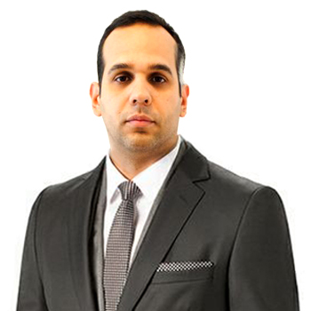

CV de Martin Castro
Full Stack Developer
Over 10 years of experince building web applications, Frontend Developer
Educación
- Diplomado en Soluciones Web
- 2016. Universidad Central de Venezuela
- Ingeniero en Informatica
- 2012. Universidad Alejandro de Humboldt
- Diplomado en Docencia en Educación Superior
- 2008. Universidad Pedagógica experimental Libertador (UPEL)
- T.S.U en infomática
- 2000. Instituto Universitario de Tecnología Industrial “Rodolfo Loredo Arismendi”

Experiencia Laboral
- Coordinador de operaciones
- 2018. Energy Friendly Solutions
- Non SAP Coordinator
- 2017 - 2018. AES
- Coordinador de Sistemas
- 2012 -2016. Idea 2000
- Docente - Programador
- 2001 - 2012. Escuela Naval de Venezuela
Infomración Adicional
- Modelado y diseño de plantas solares
- Conocimientos en el manejo de herramientas de ofimática
- Dominio del idioma Inglés